Enemigos
Zombie
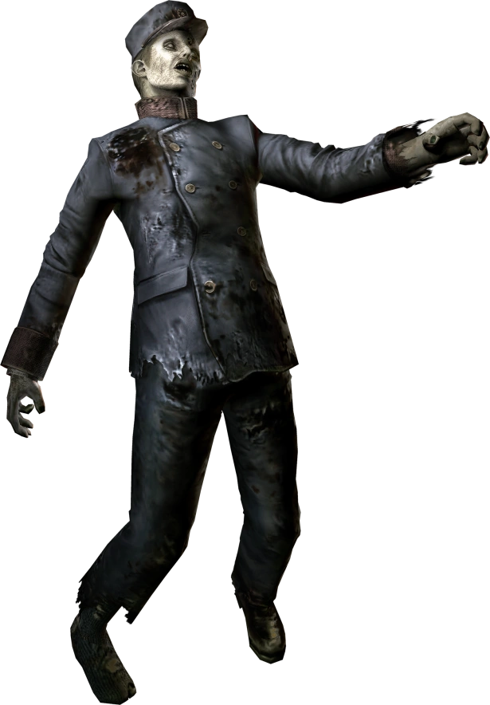Descripcion
Son los enemigos básicos del juego. Se encuentran en la mansión y sus alrededores. Se trata de los trabajadores de Umbrella que fueron infectados por el virus-T durante sus experimentos.
Crimson Head
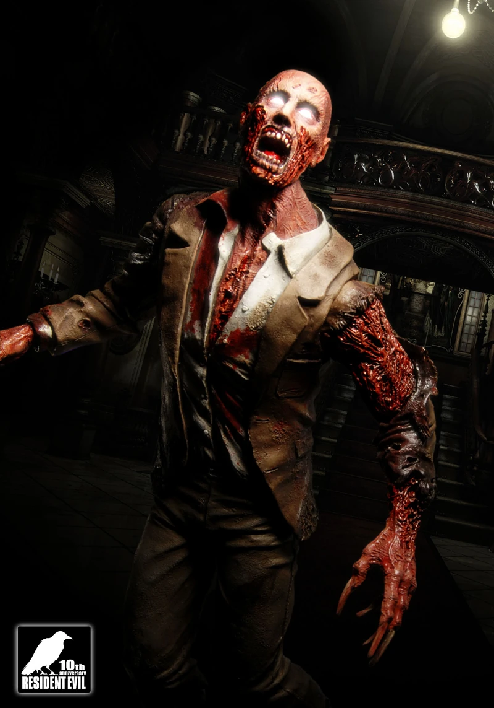Descripcion
Cuando un zombi ha sido incapacitado, se activa un proceso mutagénico llamado V-ACT, provocando que el zombi se vuelve a levantar, pero mas desarrollado. Se reconocen por su espantoso y estrepitoso alarido y su rapidez. Al contrario que los zombis normales, pueden correr, poseen garras y sus ataques hacen mas daño, además de ser más resistentes a las balas.
MA-39 Cerberus
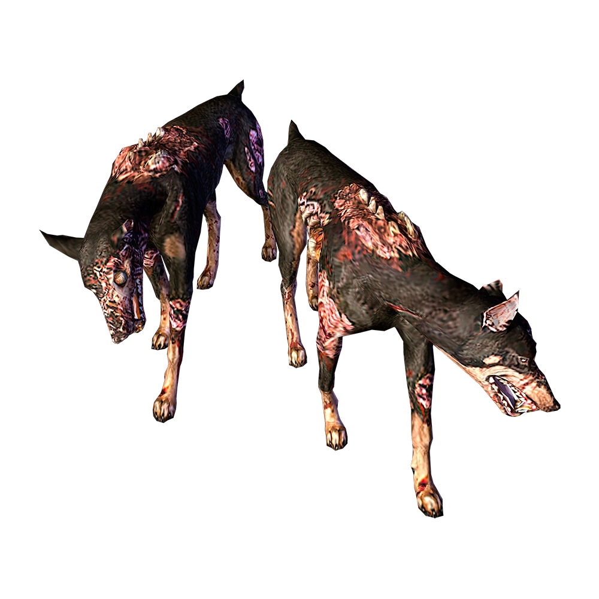Descripcion
Son perros Doberman infectados por el virus y otro enemigo común de la saga Resident Evil. Les asignaron ese nombre en mención al Cerbero, el perro mitológico de 3 cabezas que custodiaban la entrada al Hades.
Cuervos
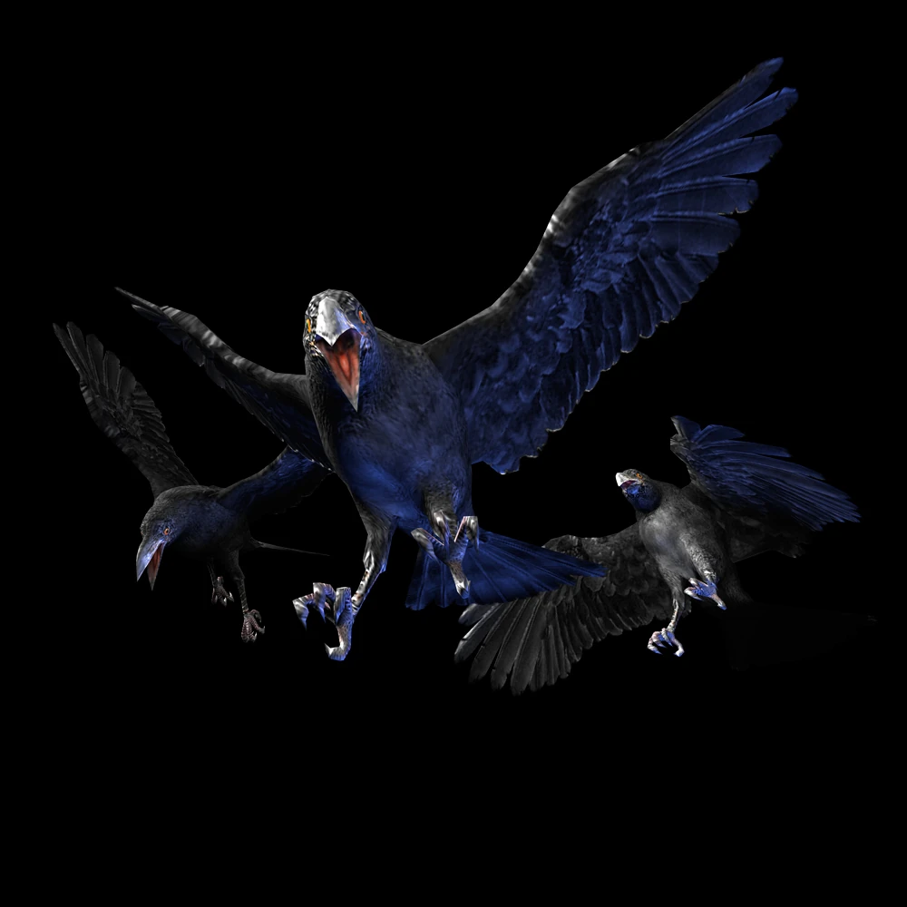Descripcion
Aves infectadas por el virus pueblan las montañas Arklay, que las ha hecho sumamente agresivas y atacan con picotazos.
Avispas
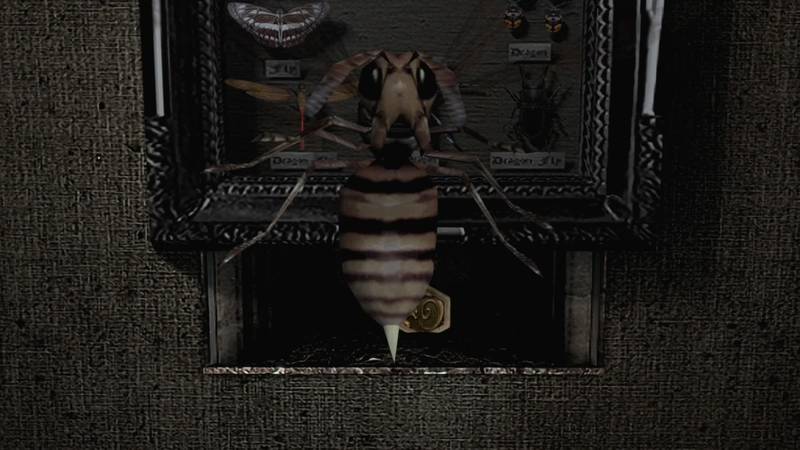Descripcion
Las avispas infectadas muestran un tamaño mayor al normal y aunque aparecen pocas veces durante el juego, lo mejor es huir de ellas. Su picadura puede envenenar.
Serpientes de jardín
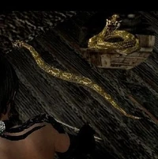Descripcion
Pequeñas serpientes infectadas que a diferencia de Yawn, no aumentaron de tamaño, pero si aumentaron su agresividad aparecen en distintos lugares del juego, mayormente al aire libre.
Web Spinner

Descripcion
: Arañas infectadas y mutadas por el virus hasta alcanzar un tamaño descomunal. Se las encuentra a menudo en grupos de 2 o 3 y tienden atacar en diversos ángulos. Su veneno es muy peligroso, pues causa envenenamiento inmediato.
Forest Speyer
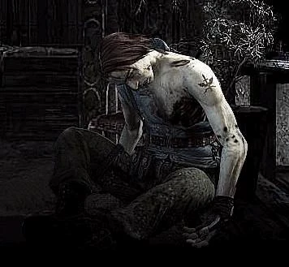Descripcion
Se trata de un miembro del equipo Bravo de S.T.A.R.S. que fue asesinado por una bandada de cuervos infectados. Cuando el equipo Alpha lo encuentra ya se ha convertido en zombi.
MA-121 Hunter Alpha
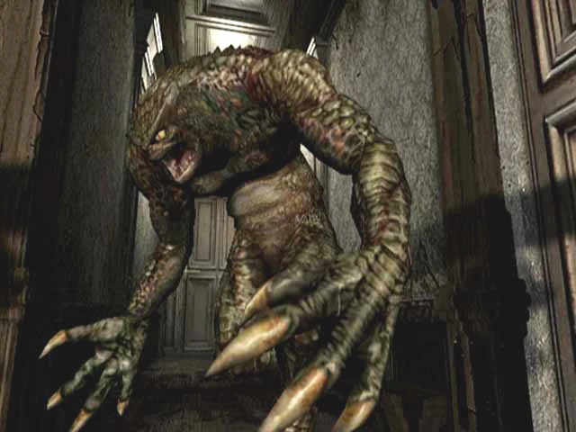Descripcion
Se trata de los primeros prototipos de la serie Hunter que fueron completados con éxito; son monstruos con rasgos de reptil y afiladas garras y dientes. Fueron creadas por Umbrella como B.O.W. ("armas bio-orgánicas").
MA-00 Quimera
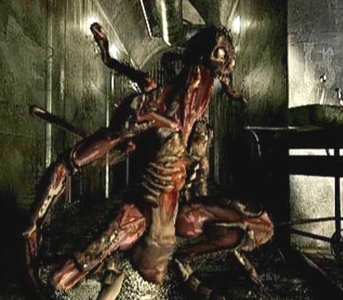Descripcion
Es otro prototipo de monstruos, creados para el programa BOW, pero al final el proyecto fue abandonado por Umbrella. Solo se encuentran en las salas de generadores del laboratorio. Se trata de una de las especies de monstruos más peligrosos del juego, pues atacan en grupo y por sorpresa.
Planta mutante
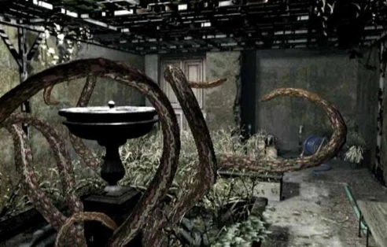Descripcion
Se trata de una planta infectada con el virus-T que ha crecido dentro del jardín interno de la mansión. La planta desarrolló sus lianas en tentáculos los cuales utiliza para atacar.
Zombis modificados
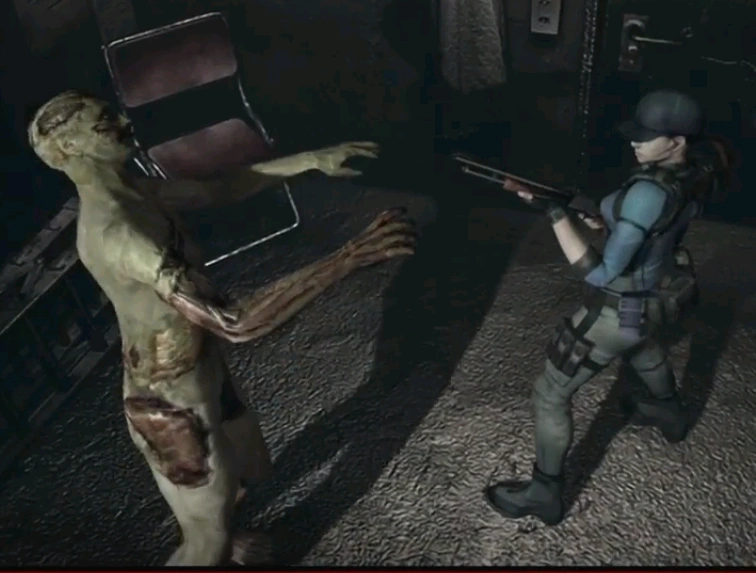Descripcion
Son humanos usados en experimentos con el virus-T. Tienen la misma velocidad, forma y ataques de un zombi, pero son mas resistentes y sus mordidas hacen el doble de daño.
Yawn
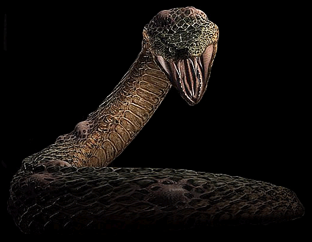Descripcion
Es una enorme serpiente venenosa que reside en el sistema de ventilación de la mansión Spencer. Su mordedura, ademas de causar un envenenamiento inmediato, reduce notablemente la salud del protagonista, por lo que al enfrentarse a ella es recomendable llevar antídotos.
Planta-42
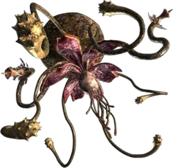Descripcion
Una gigantesca planta carnívora infectada por el virus, creación de Henry Saton. Ocupa una habitación completa de la casa del guardia. Por la infección ha crecido considerablemente y se ha vuelto muy peligrosa./p>
Fi-03 Neptune
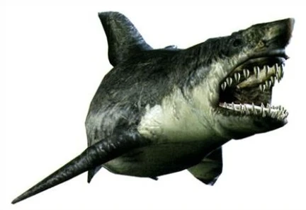Descripcion
El resultado de inocular el virus-T en un gran tiburón blanco. Este tipo de BOW fue creado específicamente para estudiar el efecto del virus en criaturas marinas. Escaparon de sus tanques de contención al inundarse todo por un momento de enajenación de uno de los científicos.
Lisa Trevor
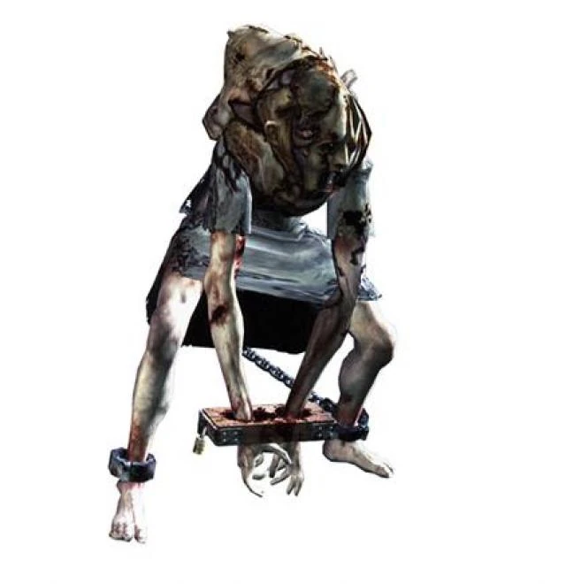Descripcion
Se trata de la hija del arquitecto de la mansión, George Trevor. Fue capturada junto con su madre por Umbrella para someterlas a experimentación con el virus Progenitor y el virus-T. Su madre no sobrevivió, pero ella aguantó 30 años toda clase de experimentos en su organismo, transformándola en un horrible ser que deambula por la mansión.
Tyrant T-002
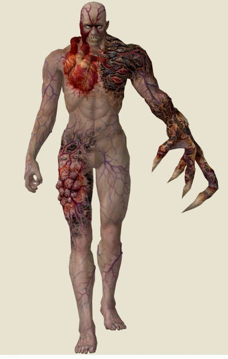Descripcion
El primer Tyrant completado, con mejoras respecto al Proto-Tyrant de Resident Evil 0, es un humano que tuvo la suerte de mutar en esta poderosa criatura en vez de un zombi, al ser expuesto al virus-T. Ataca con la enorme garra ubicada en la mano izquierda, la cual hace mucho daño.